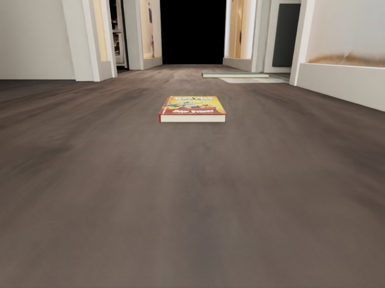
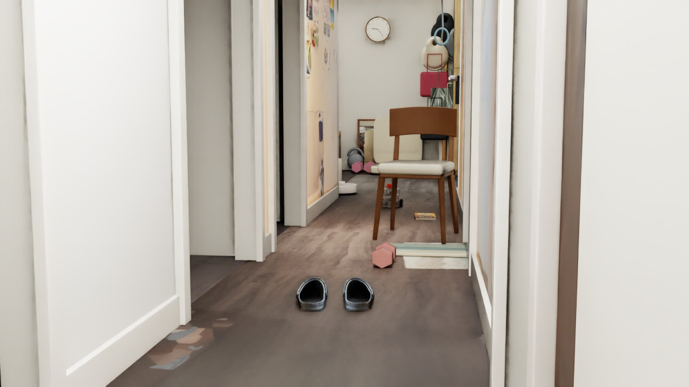

DEVLOG · 2026.09.25 · DEPTH / NAVIGATION / CONTACT
Detect the shoes on the floor,
then plan a way through.
Adding scanned objects raises two questions: can the robot detect low obstacles, and can it push them after contact? This experiment tests perception, planning and pushing separately.
01 / THE BLIND SPOT
Detecting a chair does not mean detecting shoes.
Horizontal LiDAR is about 18.2 cm high; shoes and dumbbell about 10 cm, and the book 2 cm. Rays can pass above them. The LiDAR-only run contacted a static shoe, which does not establish whether two lightweight dynamic shoes could be pushed.
Keep horizontal LiDAR and attach a depth camera to base_link, pitched down about 21°. Its 640 × 480 depth image provides 3D surface points while LiDAR observes walls and taller obstacles.

RGB view aligned with the depth camera, looking down at the floor and a 2 cm book.
02 / REMOVE THE FLOOR
See the floor—and separate it from obstacles.
Back-project depth into 3D, then use RANSAC to fit a near-horizontal floor. Points more than 1.2 cm above it become low-obstacle candidates. This filters the floor without reading ground-truth floor height.
Static checks detected 0 points in the empty target region, and 9,715, 3,415 and 4,458 for shoe, book and dumbbell. All four checks passed. Known object regions were used only for evaluation.
This checks ideal rendered depth at a fixed distance. Real sensor noise, materials, occlusion and mounting errors remain untested; it does not guarantee reliable detection of a 2 cm book on hardware.
03 / FROM DETECTION TO ROUTE
Better perception still needs a longer planning horizon.
Adding depth to short-range steering avoided shoes but stalled near the dumbbell. Next, accumulate observations in a 2.5 cm grid, inflate obstacles by 17.5 cm for robot radius plus margin, plan with A*, and follow slowly.
Place four static assets with seed 20260925. Planning uses sensed points, not asset coordinates; pose and goal direction use simulator ground truth. No SLAM or PPO is connected. Obstacles are assumed stationary and unknown space initially traversable.

Shoes, a dumbbell, a chair and a book placed along the corridor with room to pass.
Navigation video, with the initial camera-switch frame removed: sampled at about 5 Hz and encoded at 25 fps using simulation timestamps, with a one-second ending hold.
Open video ↗Results of the current round: 69.5 seconds to target. , with final error about 11.8 cm against a 12 cm threshold, maximum sampled force component 0.0 N and braking displacement 0.61 mm. Monitor six robot bodies against obstacles and non-floor colliders at a 0.1 N threshold. Discrete samples are not a continuous-time guarantee.
One successful fixed layout does not establish success across random layouts. Depth validity checks did not independently verify sensor-frame timestamps; fault handling still needs work.

Robots reach the target area behind the four items.
04 / PUSHING IS A SEPARATE TEST
A 188 g shoe—and heavier objects.
Each push test uses one dynamic object and a higher close-up camera. Use one 188 g shoe; the book is about 1 kg, dumbbell 2 kg, and chair 5 kg—the user-supplied lower-bound assumption.
Four independent push tests: shoe, book, dumbbell and chair. Drive forward slowly for 12 seconds, then stop.
Open video ↗| Objects | Assigned mass | Horizontal displacement |
|---|---|---|
| One shoe | 0.188 kg | About 33.86 cm |
| Book | about 1 kg | About 0.080 mm |
| Dumbbell | 2 kg | Less than 0.001 mm |
| Chair | Assumed lower bound: 5 kg | Less than 0.001 mm |
Contact was detected in all four push tests. The shoe moved; the other displacements were near numerical noise. Mass alone does not explain this: geometry, friction and drive force also matter.
Assume static/dynamic friction 0.5/0.4, restitution 0 and wheel torque limit 0.15 N·m, without physical calibration. Ground material also affects combined friction. Shoes are rigid, without foam or sole deformation. These results do not predict real pushing capacity; push and avoidance scenes must be interpreted separately.
05 / REPLAY
Script, result and UI replay.
Save edits and open the local Isaac Sim scene. Run one downloaded depth, navigation or push-test script at a time in Window → Script Editor. Play alone does not start navigation.
Use NavTestCamera for navigation, PushCamera for push tests, and a depth camera on base_link. Scripts open independent test scenes, pause at completion and save reports/frames. Reruns overwrite outputs; preserve any records needed first.
Download three Python scripts and replay instructions · Navigation Report · Depth-detection report · Push-test report
Scripts depend on local corridor, robot, LiDAR and simforge_assets files; models are not included. Viewport frames are captured at about 5 Hz and encoded by timestamp.
Next step: change layout, check reliability.
Test different placements, occlusion and depth noise; record pass rates and failure causes before adding dynamic, pushable obstacles.
Previous: navigating past a real chair